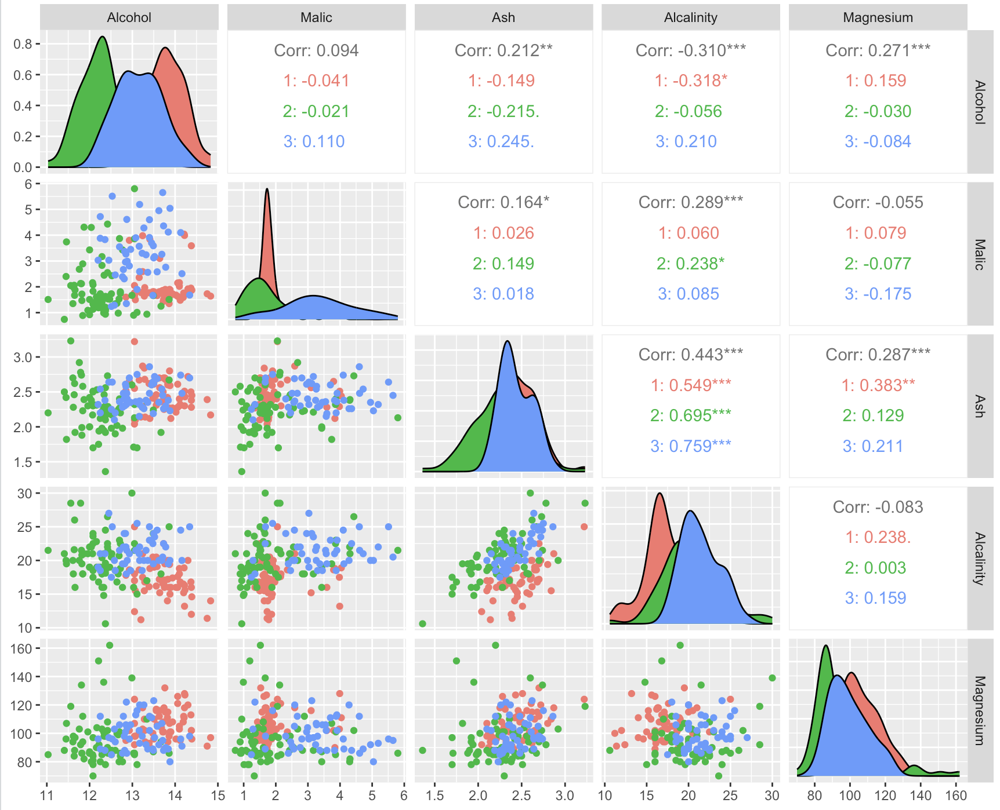
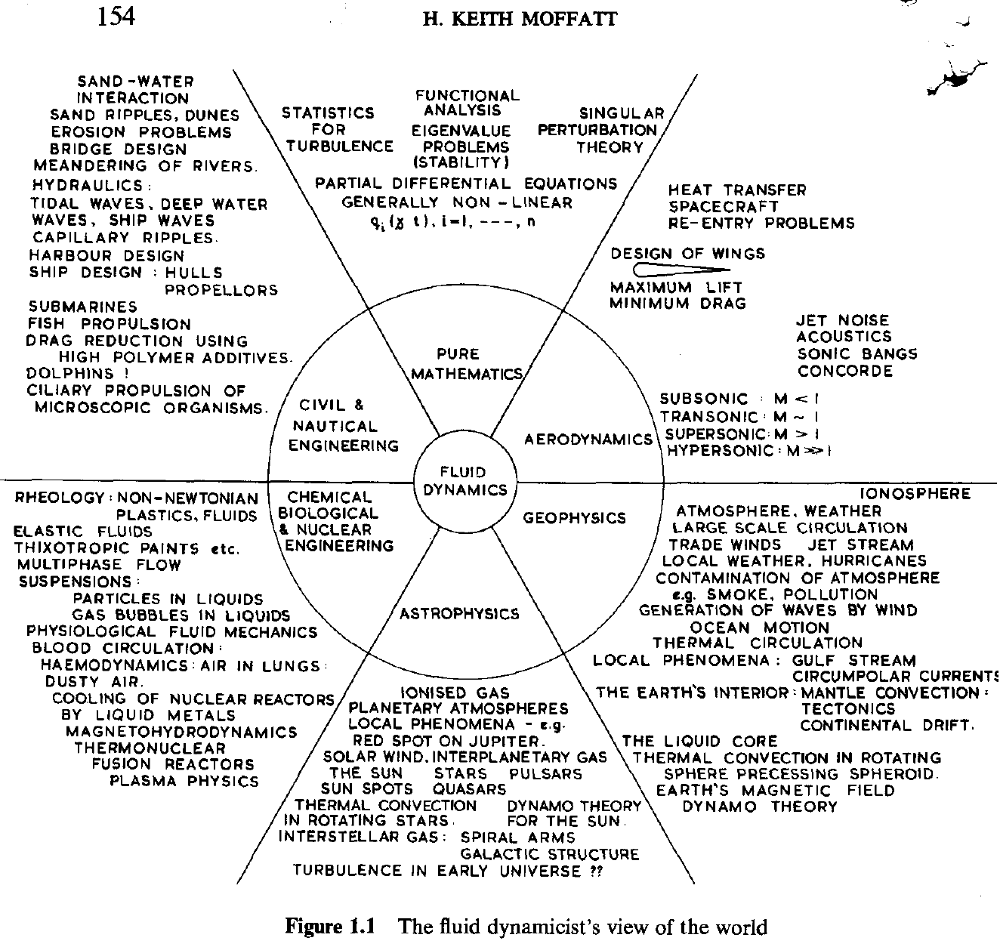

Using CSS + SVG filters to simulate color vision deficiencies
Sed posuere consectetur est at lobortis. Fusce dapibus, tellus ac cursus commodo, tortor mauris condimentum nibh, ut fermentum massa justo sit amet risus. Vivamus sagittis lacus vel augue laoreet rutrum faucibus dolor auctor.

Nullam quis risus eget urna mollis ornare vel eu leo. Maecenas faucibus mollis interdum. Integer posuere erat a ante venenatis dapibus posuere velit aliquet.
Cum sociis natoque penatibus et magnis dis parturient montes, nascetur ridiculus mus. Integer posuere erat a ante venenatis dapibus posuere velit aliquet. Praesent commodo cursus magna, vel scelerisque nisl consectetur et.
Vivamus sagittis lacus vel augue laoreet rutrum faucibus dolor auctor. Maecenas faucibus mollis interdum. Morbi leo risus, porta ac consectetur ac, vestibulum at eros.

Cras mattis consectetur purus sit amet fermentum. Integer posuere erat a ante venenatis dapibus posuere velit aliquet. Praesent commodo cursus magna, vel scelerisque nisl consectetur et.